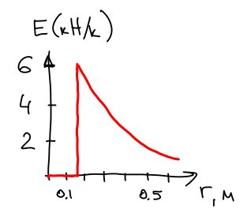

Физика, 10 класс
Лекция 1.
Концепция зарядов. Закон сохранения заряда. Изоляторы и проводники. Заземление. Индуцированные заряды. Закон Кулона. Принцип суперпозиции. Электрическое поле. Электрическое поле системы зарядов.
Вопросы
- Есть три объекта A, B и C. Когда A подносят к B, они отталкиваются. Когда B подносят к C, они тоже отталкиваются. Какие из следующих утверждений верны? (а) A и C заряжены одноимённо; (б) A и C заряжены разноимённо; (в) все три объекта заряжены одноимённо; (г) один из объектов не заряжен; (д) не хватает информации.
- Когда A подносят к B, они притягиваются. Когда B подносят к C, они отталкиваются. Какие из следующих утверждений верны? (а) A и C заряжены одноимённо; (б) A и C заряжены разноимённо; (в) все три объекта заряжены одноимённо; (г) один из объектов не заряжен; (д) не хватает информации.
Задачи
- Диполь.
- найти поле диполя на оси
- найти поле диполя на оси далеко от диполя
- Заряженное кольцо.
- найти поле на оси заряженного кольца
- далеко от кольца
- (сложно) близко к центру кольца; что будет, если поместить недалеко от центра кольца заряд, как он будет двигаться?
Лекция 2.
Силовые линии. Поток. Закон Гаусса. Проводник в электростатике. Поверхностные заряды.
Вопросы
- Допустим, что электрический поток через некоторую замкнутую поверхность равен нулю. Какие из следующих утверждений верны? (а) внутри поверхности нет зарядов; (б) суммарный заряд внутри поверхности равен 0; (в) электрическое поле везде на поверхности равно 0; (г) количество силовых линий, входящих в поверхность, равно количеству силовых линий, покидающих её.
- Представьте сферическую поверхность, окружающую заряд \(Q\). Что произойдёт с потоком через неё, если (а) заряд утроить; (б) объём сферы удвоить; (в) поменять сферу на куб; (г) переместить заряд в другое место внутри сферы.
- (Почему такое невозможно?) Сплошная медная сфера радиуса 15 см
находится в равновесии и несёт заряд 40 нК. На картинке показан
график зависимости величины электрического поля от расстояния до
центра сферы.

- Могут ли силовые линии электростатического поля быть замкнутыми?
Задачи
- Нарисуйте картину силовых линий для двух одноимённых зарядов.
- Непроводящая сплошная сфера радиуса \(R\) заряжена равномерно с
плотностью \(\rho\). С помощью закона Гаусса посчитайте электрическое
поле (тут нужны подсказки):
- в точке \(P\) снаружи сферы
- в точке \(P\) внутри сферы
- То же самое для заряженной палочки бесконечной длины (дана линейная плотность \(\lambda\)).
- Для заряженной бесконечной плоскости (дана поверхностная плотность \(\sigma\)).
- (теорема Ирншоу) Говорят, что система находится в устойчивом равновесии, если при попытке вывести её из равновесия на систему начинает действовать возвращающая сила. Докажите, что заряд во внешнем электрическом поле не может находиться в устойчивом равновесии (при условии отсутствия сил другой природы — например, гравитационных). Указание: попробуйте сместить заряд из положения равновесия и посмотреть, что получится.
Лекция 3.
Потенциал, разность потенциалов. Потенциал однородного поля. Потенциал точечного заряда. Потенциал системы зарядов. Потенциал заряженного проводника. Полость в проводнике.
Задачи
- Докажите, что во всех точках на поверхности проводника потенциал одинаков.
- Покажите, что внутри полого проводника поле равно нулю независимо от формы проводника и полости (это явление называется экранированием).
- Электрическое поле от заряженной палочки конечной длины. Для
решения этой задачи понадобится брать интеграл от \(1/x^2\), на лекции
как раз будет объяснено как это делать (потому что надо будет
находить потенциал точечного заряда).
- что будет, если точка наблюдения далеко от палочки?
- Две проводящие сферы радиусами \(r_1\) и \(r_2\) находятся на значительном расстоянии друг от друга. Их соединяют длинным проводом. Сферы равномерно заряжены. Найдите отношение электрических полей на поверхностях сфер.
См. также В.В. Можаев, «Проводники в электрическом поле».
Лекция 4.
Ёмкость. Плоский конденсатор. Последовательное соединение конденсаторов. Энергия, запасённая в конденсаторе. Диэлектрик в конденсаторе.
Вопросы
- Конденсатор заряжен до заряда \(Q\) при разности потенциалов на пластинах \(V\). Что произойдёт, если разность потенциалов удвоят? (а) ёмкость уменьшится в два раза, заряд останется тем же; (б) ёмкость и заряд уменьшатся в два раза; (г) ёмкость и заряд увеличатся в два раза; (д) ёмкость останется той же, заряд увеличится в два раза.
- Зарядим конденсатор с помощью батарейки и затем отсоединим его от неё. Конденсатор представляет собой большие параллельные плоские пластины с воздухом между ними. Растащим их на небольшое расстояние. Что произойдёт с зарядом на них? С потенциалом? С энергией, запасённой в конденсаторе? С ёмкостью? С электрическим полем между пластинами? Совершается ли работа при таком перемещении пластин?
Задачи
- Параллельное соединение конденсаторов.